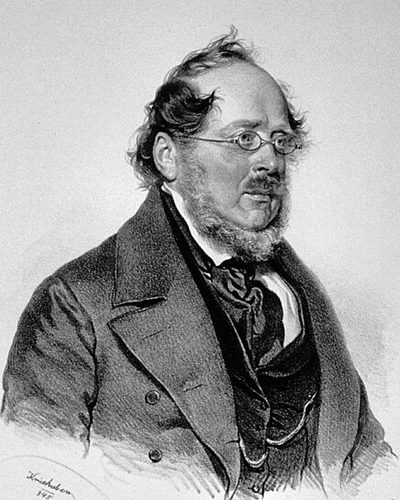

Ideologies / Nationalist
What is Economic Nationalism?
Economic Nationalism is a political ideology in the Nationalist family. List charged Adam Smith's school with seeing only individuals and humanity and missing the nation that stands between them. A country's wealth lies in its productive powers, meaning its industry, skills, institutions and transport, and not in the goods it can buy cheaply today. A nation that is behind must therefore shelter its young industries with tariffs until they can compete, with free trade inside its borders and open trade only among equals.
The power to produce wealth matters more than wealth itself.
Defined from: Friedrich List, The National System of Political Economy (1841)
See how close you are to Economic Nationalism Dare a friend to answer as one


Where Economic Nationalism stands on 13 axes
Each axis runs from 0 to 100. A score of 50 is the middle. On a classic compass it sits in the Libertarian Right quadrant.
| Axis | Position | Score | In words |
|---|---|---|---|
| EconomyMarket to Planned | 55 | Balanced | |
| OwnershipPrivate to Collective | 25 | Strongly Private | |
| RightsLiberty to Security | 45 | Balanced | |
| GovernmentDemocracy to Autocracy | 45 | Balanced | |
| StructureDecentralised to Centralised | 65 | Leans Centralised | |
| NationInternationalist to Nationalist | 80 | Strongly Nationalist | |
| ImmigrationMulticulturalist to Assimilationist | 55 | Balanced | |
| ValuesProgressive to Traditional | 45 | Balanced | |
| TechnologyAccelerationist to Precautionary | 15 | Very strongly Accelerationist | |
| EnvironmentIndustrialist to Environmentalist | 10 | Very strongly Industrialist | |
| ReligionSecular to Religious | 35 | Leans Secular | |
| MilitaryPacifist to Militarist | 50 | Balanced | |
| TradeFree Trade to Protectionist | 95 | Very strongly Protectionist |
Ideologies closest to Economic Nationalism
- Hamiltonianism88% alike
- Three Principles of the People83% alike
- Gaullism81% alike
- Bolivarianism81% alike
- Garveyism80% alike
Its opposite on this map is Tolstoyan Anarcho Pacifism, at 33%.
Parties near Economic Nationalism
- Whig PartyUnited States. Whig Party Platform (1844)85% alike
- KuomintangChina. Three Principles of the People (1924)83% alike
- Federalist PartyUnited States. The Federalist Papers (1788)83% alike
- Justicialist PartyArgentina. The Twenty Truths of Peronism (1950)83% alike
Common questions
What is Economic Nationalism?
Economic Nationalism is a political ideology in the Nationalist family. List charged Adam Smith's school with seeing only individuals and humanity and missing the nation that stands between them. A country's wealth lies in its productive powers, meaning its industry, skills, institutions and transport, and not in the goods it can buy cheaply today. A nation that is behind must therefore shelter its young industries with tariffs until they can compete, with free trade inside its borders and open trade only among equals.
What does Economic Nationalism believe?
In one line: The power to produce wealth matters more than wealth itself. Its strongest positions are Protectionist, Industrialist, Accelerationist. List charged Adam Smith's school with seeing only individuals and humanity and missing the nation that stands between them. A country's wealth lies in its productive powers, meaning its industry, skills, institutions and transport, and not in the goods it can buy cheaply today. A nation that is behind must therefore shelter its young industries with tariffs until they can compete, with free trade inside its borders and open trade only among equals.
Who founded Economic Nationalism?
Economic Nationalism is defined here from The National System of Political Economy (1841) by Friedrich List. The thinker most tied to it is Friedrich List (1789 to 1846).
Is Economic Nationalism left wing or right wing?
On a classic two axis compass Economic Nationalism falls in the Libertarian Right quadrant, which means the economic centre and the middle between libertarian and authoritarian. Left and right hide a lot, though, which is why EthosScales scores it on thirteen separate axes.
How is Economic Nationalism different from Hamiltonianism?
They are close, at a 88% match. The biggest gaps are on Structure, where Economic Nationalism scores 65 and Hamiltonianism scores 85, and Military, where Economic Nationalism scores 50 and Hamiltonianism scores 65. On each axis, 0 is one end and 100 is the other.
Think this is wrong? Suggest a correction. The scores are editorial estimates.